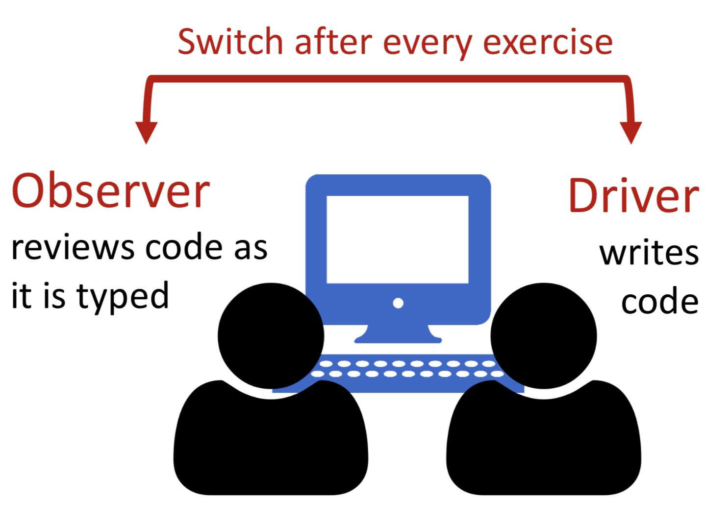
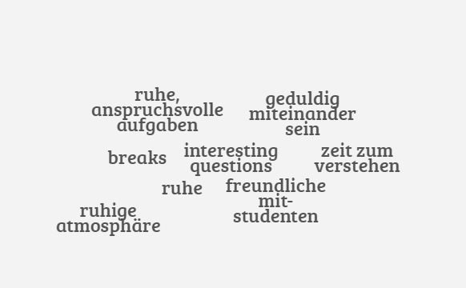
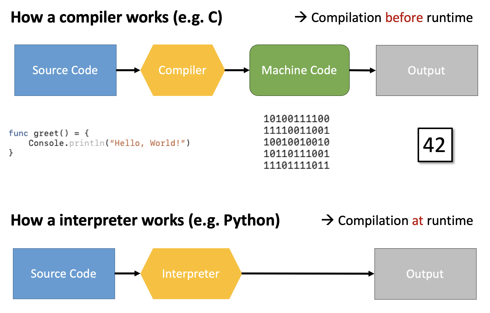
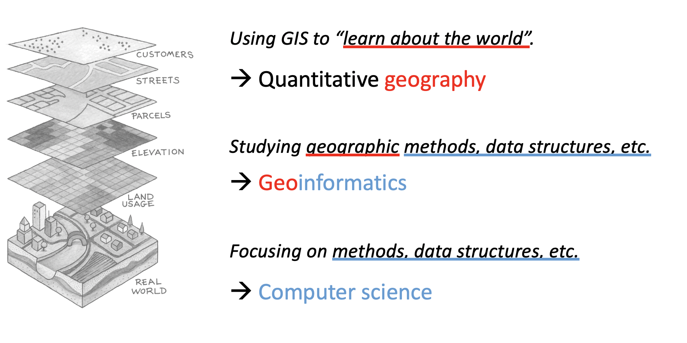
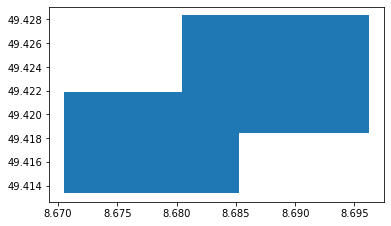

Introduction to Computer Science for Geographers¶
What we’ve done on day 1¶
How this course works¶
Ask questions¶
Work together → Pair programming¶

Good learning environment¶

Time table¶

All course material is on¶
https://github.com/redfrexx/cs4geos19¶
We will learn how to use git to track our work progress.
What we’ve done on day 1¶
Computer Science and Geography¶

Programming Languages¶
What ist the difference between comilers and interpreters?¶
Which data structures did we use to read GeoJSON in Python?¶
String¶
[1]:
geojson_path = "./data/some_features.geojson"
[2]:
with open(geojson_path, "r") as src:
geojson_str = src.read()
print(geojson_str)
{"type":"FeatureCollection","features":[{"type":"Feature","properties":{"color":"green","id":1},"geometry":{"type":"Polygon","coordinates":[[[8.670530319213867,49.41337442939828],[8.685293197631836,49.41337442939828],[8.685293197631836,49.421861555723595],[8.670530319213867,49.421861555723595],[8.670530319213867,49.41337442939828]]]}},{"type":"Feature","properties":{"color":"blue","id":2},"geometry":{"type":"Polygon","coordinates":[[[8.680486679077148,49.418455714236885],[8.69619369506836,49.418455714236885],[8.69619369506836,49.42833758576036],[8.680486679077148,49.42833758576036],[8.680486679077148,49.418455714236885]],[[8.688468933105469, 49.42398310798032],[8.693962097167969, 49.42398310798032],[8.693962097167969, 49.426607006252176],[8.688468933105469, 49.426607006252176],[8.688468933105469, 49.42398310798032]]]}}]}
Decode a string to a dictionary using json.loads()¶
[34]:
import json
geojson_dict = json.loads(geojson_str)
print("Data type: %s" % type(geojson_dict))
geojson_dict
Data type: <class 'dict'>
[34]:
{'type': 'FeatureCollection',
'features': [{'type': 'Feature',
'properties': {'color': 'green', 'id': 1},
'geometry': {'type': 'Polygon',
'coordinates': [[[8.670530319213867, 49.41337442939828],
[8.685293197631836, 49.41337442939828],
[8.685293197631836, 49.421861555723595],
[8.670530319213867, 49.421861555723595],
[8.670530319213867, 49.41337442939828]]]}},
{'type': 'Feature',
'properties': {'color': 'blue', 'id': 2},
'geometry': {'type': 'Polygon',
'coordinates': [[[8.680486679077148, 49.418455714236885],
[8.69619369506836, 49.418455714236885],
[8.69619369506836, 49.42833758576036],
[8.680486679077148, 49.42833758576036],
[8.680486679077148, 49.418455714236885]],
[[8.688468933105469, 49.42398310798032],
[8.693962097167969, 49.42398310798032],
[8.693962097167969, 49.426607006252176],
[8.688468933105469, 49.426607006252176],
[8.688468933105469, 49.42398310798032]]]}}]}
Access an item of a dictionary using dict[key]:
[35]:
features = geojson_dict["features"]
print("Data type: %s" % type(features))
features
Data type: <class 'list'>
[35]:
[{'type': 'Feature',
'properties': {'color': 'green', 'id': 1},
'geometry': {'type': 'Polygon',
'coordinates': [[[8.670530319213867, 49.41337442939828],
[8.685293197631836, 49.41337442939828],
[8.685293197631836, 49.421861555723595],
[8.670530319213867, 49.421861555723595],
[8.670530319213867, 49.41337442939828]]]}},
{'type': 'Feature',
'properties': {'color': 'blue', 'id': 2},
'geometry': {'type': 'Polygon',
'coordinates': [[[8.680486679077148, 49.418455714236885],
[8.69619369506836, 49.418455714236885],
[8.69619369506836, 49.42833758576036],
[8.680486679077148, 49.42833758576036],
[8.680486679077148, 49.418455714236885]],
[[8.688468933105469, 49.42398310798032],
[8.693962097167969, 49.42398310798032],
[8.693962097167969, 49.426607006252176],
[8.688468933105469, 49.426607006252176],
[8.688468933105469, 49.42398310798032]]]}}]
Access an item from a list using list[index]:
[32]:
first_feature = features[0]
print("Data type: %s" % type(first_feature))
first_feature
Data type: <class 'dict'>
[32]:
{'type': 'Feature',
'properties': {'color': 'green', 'id': 1},
'geometry': {'type': 'Polygon',
'coordinates': [[[8.670530319213867, 49.41337442939828],
[8.685293197631836, 49.41337442939828],
[8.685293197631836, 49.421861555723595],
[8.670530319213867, 49.421861555723595],
[8.670530319213867, 49.41337442939828]]]}}
[43]:
first_geometry = first_feature["geometry"]
first_geometry
[43]:
{'type': 'Polygon',
'coordinates': [[[8.670530319213867, 49.41337442939828],
[8.685293197631836, 49.41337442939828],
[8.685293197631836, 49.421861555723595],
[8.670530319213867, 49.421861555723595],
[8.670530319213867, 49.41337442939828]]]}
Fiona to read and write different geospatial data formats¶
[39]:
import fiona
with fiona.open(geojson_path, "r") as src:
features = list(src)
features
[39]:
[{'type': 'Feature',
'id': '1',
'properties': OrderedDict([('color', 'green'), ('id', 1)]),
'geometry': {'type': 'Polygon',
'coordinates': [[(8.670530319213867, 49.41337442939828),
(8.685293197631836, 49.41337442939828),
(8.685293197631836, 49.421861555723595),
(8.670530319213867, 49.421861555723595),
(8.670530319213867, 49.41337442939828)]]}},
{'type': 'Feature',
'id': '2',
'properties': OrderedDict([('color', 'blue'), ('id', 2)]),
'geometry': {'type': 'Polygon',
'coordinates': [[(8.680486679077148, 49.418455714236885),
(8.69619369506836, 49.418455714236885),
(8.69619369506836, 49.42833758576036),
(8.680486679077148, 49.42833758576036),
(8.680486679077148, 49.418455714236885)],
[(8.688468933105469, 49.42398310798032),
(8.693962097167969, 49.42398310798032),
(8.693962097167969, 49.426607006252176),
(8.688468933105469, 49.426607006252176),
(8.688468933105469, 49.42398310798032)]]}}]
How can you perform geospatial operations in Python?¶
[71]:
from shapely.geometry import shape
first_geometry_obj = shape(first_geometry)
print("Data type: %s" % type(first_geometry_obj))
first_geometry_obj
Data type: <class 'shapely.geometry.polygon.Polygon'>
[71]:

You can also do this all at once:
[54]:
second_geometry_obj = shape(features[1]["geometry"])
second_geometry_obj
[54]:
Everything in Python is an object. Objects have attributes …
[78]:
first_geometry_obj.geom_type
[78]:
'Polygon'
… and methods:
[80]:
print("Does the first feature intersect the second feature?")
first_geometry_obj.intersects(second_geometry_obj)
Does the first feature intersect the second feature?
[80]:
True
Performing complex geospatial analyses using ‘GeoPandas’¶
GeoPandas is built upon fiona, shapely and pandas to facilitate geospatial analysis in Python.
[67]:
import geopandas as gpd
polygons_df = gpd.read_file(geojson_path)
polygons_df.head()
polygons_df.plot()
[67]:
<matplotlib.axes._subplots.AxesSubplot at 0x12402a940>

[83]:
import mplleaflet
polygons_df.plot()
mplleaflet.display()
/Users/chludwig/miniconda3/envs/cs4geos/lib/python3.7/site-packages/IPython/core/display.py:694: UserWarning: Consider using IPython.display.IFrame instead
warnings.warn("Consider using IPython.display.IFrame instead")
[83]:
If you want to learn more about GeoPandas, check out this tutorial.